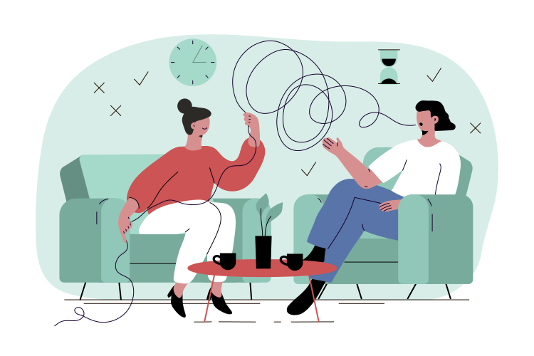

Psiholog Clinician cu drept de liberă practică Cristina Anghel.
Servicii psihoterapie și Hipnoza Ericksoniană.
Psiholog Clinician cu drept de liberă practică Cristina Anghel.
Servicii psihoterapie și Hipnoza Ericksoniană.
Psihoterapia este un serviciu specializat de asistare psihologică, în acelaşi timp este şi o relaţie umană de însoţire şi ajutorare în care un profesionist cu studii de specialitate şi formare profesională în acest sens îl însoţeşte pe client în călătoria de autocunoaştere, creştere, vindecare psiho-emoţională, depăşire a propriilor blocaje si limitari, scopul fiind acela de dezvoltare a resurselor proprii si de crestere a calitatii vietii.
Este important să alegi cu grijă un psihoterapeut, chiar dacă procesul poate fi uneori frustrant. În ședințele de terapie, terapeutul folosește tehnici pentru a ajuta clientul să conștientizeze, să se înțeleagă și să accepte sinele, să facă schimbări în gândire, simțire și acțiune, în vederea unei vieți mai împlinite și în acord cu sine.
Psihoterapetul facilitează scoaterea la suprafață a unor nevoi și dorințe, fără a oferi clientului soluții pentru satisfacerea acestora. Chiar confruntarea cu aceste nevoi neîmplinite conduce spre vindecare. Mai mult, clientul are ocazia să își folosească propriile resurse pentru a-și depăși dificultățile, vindecarea devenind durabilă, și metoda de adaptare fiind însușită poate fi transferată și asupra altor dificultăți posibile, în viitor.
Sedintele au loc saptamanal iar timpul alocat este de 50 minute. Recomandam sa nu intarziati deoarece timpul nu se poate prelungi existand si alte programari. Toate sedintele programate saptamanal se vor plati cu exceptia vacantelor anuntate, internarilor sau decesul rudelor. Neanuntarea neprezentarii cu 24 de ore inainte implica plata sedintel programate.
Regulile de etica si confidentialitate ale psihoterapeutilor sunt foarte stricte, neavand voie sa dezvaluie identitatea clientilor sau orice alt aspect legat de ce se dicuta in cabinet, cu exceptia cazurilor in care exista risc de suicid.
Unde se Desfășoară Psihoterapia?
Care este primul pas în căutarea unui terapeut?
Ce se întâmplă în prima sesiune de terapie?
Psihoterapia, cunoscută și sub denumirea de terapie verbală sau, doar "terapie", este o formă de tratament menită să amelioreze suferința emoțională și problemele de sănătate mintală. Oferită de o varietate de profesioniști instruiți—psihiatri, psihologi, asistenți sociali sau consilieri licențiați—implică examinarea și dobândirea de înțelegere asupra alegerilor de viață și dificultăților cu care se confruntă indivizii, cuplurile sau familiile. Sesiunile de terapie se referă la întâlniri structurate între un furnizor licențiat și un client, cu scopul de a îmbunătăți un aspect al vieții lor. Psihoterapia cuprinde multe tipuri de tratament și este practicată de o gamă largă de clinicieni folosind o varietate de strategii.
Perioade de schimbări și tranziții.
Separare sau divorț.
Pierdere (doliu).
Sentimente de neajutorare, pesimism.
Furie excesivă sau iritabilitate.
Stimă de sine scazută, devalorizare.
Abuz de substanțe (alcool, drog).
Dependență jocuri de noroc.
Anxietate, atacuri de panică, fobii.
Depresie.
Retragere din viața socială.
Probleme de relaționare.
Dificultăți în luarea deciziilor.
Sentimente de vinovăție.
Experiența trăirii unor situații traumatice în trecut sau în prezent.
Tulburări alimentare, ale imaginii corporale.
Dificultăți legate de somn.
Există nenumărați terapeuți compasionali și eficienți în lume—dar nu fiecare terapeut este cea mai bună persoană pentru a ajuta fiecare individ care caută tratament. Deși poate fi frustrant atât pentru pacienți, cât și pentru profesioniști, găsirea terapeutului potrivit este de obicei un proces de încercare și eroare.
Deși perspectiva căutării unui terapeut poate fi într-adevăr descurajantă, mai multe instrumente online pot face procesul semnificativ mai ușor.
Să vezi o persoană dragă luptându-se cu probleme de sănătate mintală poate fi dureros și poate declanșa sentimente de neputință. Deși decizia de a urma terapia va fi, în majoritatea cazurilor, doar a individului, este posibil ca cei preocupați să ofere suport emoțional, precum și asistență concretă. Acest lucru poate însemna conectarea lor cu resurse educaționale despre terapie, ajutându-i să identifice clinicieni potențiali în zona lor, stabilirea programărilor sau oferirea de transport la prima sesiune.

Multe tipuri de terapie s-au dovedit a fi eficiente în tratarea provocărilor comune de sănătate mintală, iar determinarea abordării "cele mai bune" pentru o persoană anume depinde adesea de preocupările lor specifice, de alianța pe care o pot forma cu terapeutul și de preferințele lor personale. Clienții care vin la terapie cu preocupări specifice de sănătate mintală—cum ar fi tulburarea obsesiv-compulsivă sau stresul post-traumatic—pot beneficia cel mai mult de un clinician specializat în acel domeniu sau care utilizează un tip de terapie special conceput pentru a-l trata.
Cei care caută ajutor pentru probleme de relație sau de familie pot beneficia de terapie de cuplu sau terapie de familie.
Cei care caută un tip de terapie potențial mai accesibil sau pentru care ar putea fi benefic să participe la terapie împreună cu alții care au experiențe similare, pot lua în considerare consilierea de grup sau terapia de grup.
Prima sesiune de terapie poate provoca anxietate și este normal să te simți agitat sau nesigur. Din fericire, majoritatea pacienților vor descoperi că prima sesiune de terapie urmează un format previzibil. Majoritatea terapeuților își petrec prima sesiune punând întrebări generale pentru a-și face o idee despre istoricul clientului, experiența lor anterioară cu terapia și problemele pe care speră să le abordeze. Clienții se pot întreba ce pot și ar trebui să aducă în discuție și, de fapt, puține, dacă există, subiecte sunt tabu. Ei vor discuta, de asemenea, despre modul lor de lucru sau stilul lor și vor oferi un plan general despre ce poate aștepta clientul. Dacă un client are întrebări despre confidențialitate și intimitate, acele preocupări ar trebui să fie ridicate și abordate. Detaliile logistice, cum ar fi stabilirea unui program de plată, pot avea loc și în prima sesiune.
Medicația este adesea utilizată împreună cu psihoterapia—dar nu este o garanție pentru fiecare client. Dacă un terapeut consideră că un anumit client ar putea beneficia de medicație, el sau ea va discuta acest lucru cu clientul înainte de a-l trimite la un profesionist care poate prescrie, cum ar fi un psihiatru. În timp ce clientul va trebui probabil să participe la întâlniri periodice cu profesionistul care prescrie pentru a discuta despre efectele secundare și ajustările dozelor, el va continua să vadă și terapeutul pentru a dezvolta abilități de coping și strategii care să susțină în continuare sănătatea lor mintală.
Terapia se termină de obicei atunci când clientul simte că și-a atins obiectivele sau când simte că nu mai progresează; în unele cazuri, probleme logistice, cum ar fi schimbarea acoperirii de asigurare, necesită încheierea terapiei. Alternativ, este posibil ca un terapeut să determine că nu este cel mai bun practician pentru a ajuta un anumit client. Când acest lucru se întâmplă, terapeutul va redirecționa de obicei clientul la un alt furnizor, unde acesta poate continua munca dacă așa alege.